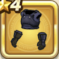

くろがねのよろい上
攻略班 5.5点 / 麻痺耐性+5%虫系への耐性+10%眠り耐性+5%
くわしい特徴
【レベル別習得スキル】 Lv1麻痺耐性+5% Lv4虫系への耐性+10% Lv6眠り耐性+5% Lv8守備力+4 Lv10さいだいHP+3 Lv16すばやさ+3 Lv20守備力+4 【限界突破スキル】 1凸麻痺耐性+5% 2凸守備力+2 3凸きようさ+3 4凸さいだいHP+3

攻略班 5.5点 / 麻痺耐性+5%虫系への耐性+10%眠り耐性+5%
【レベル別習得スキル】 Lv1麻痺耐性+5% Lv4虫系への耐性+10% Lv6眠り耐性+5% Lv8守備力+4 Lv10さいだいHP+3 Lv16すばやさ+3 Lv20守備力+4 【限界突破スキル】 1凸麻痺耐性+5% 2凸守備力+2 3凸きようさ+3 4凸さいだいHP+3